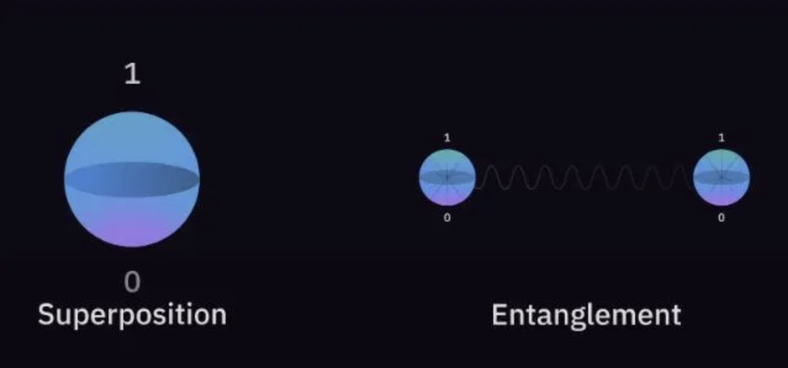
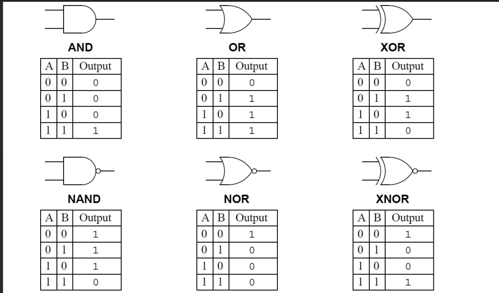

All about Quantum Computing!
Quantum computers have a whole new and different approach to problem solving which is unlike any of the computers we use today and can potentially solve huge problems that otherwise would have been impossible to decipher. That brings us to the question what even is Quantum Computing?

What Is Quantum Computing and How does it work?
Fundamentally, quantum computing uses the ideas of quantum mechanics, the foundational theory that explains the properties of matter and energy at the atomic and subatomic levels. In classical computers, we are well accustomed to using bits as the smallest and indivisible unit of data. Quantum computers, on the other hand, use'qubits’. The fundamental process of how qubits work is very interesting. In classical computers, each bit or binary unit of data can exist in only one state (either 0 or 1). They can be either on (1) or off (0). Qubits can also be set to two values, either 0 or 1; however, qubits can exist in multiple states concurrently. It can be in any proportion of both states at once! This property is known as superposition, and due to this, the computational power of a quantum computer increases exponentially as compared to a classical one. For example, if you had 15 quibits, you could store 215 or 32768 values! Imagine what could be done with such huge computational power!

(Image taken from https://medium.com/@arti.singh280/unveiling-quantum-wonders-superposition-and-entanglement-in-quantum-computing-368a484d5018)
Superposition is just one piece of the entire world of quantum computing; this brings us to the next crucial principle, entanglement.
Entanglement is essentially the process by which the qubits become interconnected with each other. This means the state of one qubit will always and immediately affect the state of another, no matter how far they are from each other. This is another major reason why quantum computers are more effective than classical computers in carrying out complex operations, such as more efficient optimisation problems like finding the shortest route in a network. You can actually infer the properties of a quibit's partners just from measuring one entangled quibit. Of course, although we say the state is instantly transferred, we must remember that signals cannot be transmitted faster than the speed of light using entanglement. However, it's extremely rapid, for sure!

A traditional logic gate, as shown above in the picture, accepts an input and gives an output. If we take the AND gate, for instance, if any of the inputs are 0, then the output will also be 0. Therefore, it produces one definite output. However, in the realm of quantum computing, it's very different.

As discussed earlier, the concept of superposition allows qubits to be in multiple states simultaneously. This is fundamental to how quantum gates work as well and allows quantum gates to perform operations in parallel on all these possible states, unlike classical gates that handle one state at a time. Quantum gates work with superpositions as input, rotate probabilities, and finally output another superposition. In essence, the entire pool of calculations possible within the setup are carried out all at once. Quantum gates are represented by mathematical matrices that describe how they transform qubits' states. The most notable quantum logic gates include the Hadamard Gate (H), the Controlled Not (CNOT) Gate, and the Pauli-X Gate. Each of these gates has a unique purpose; for instance, the H gate creates superposition and helps in the manipulation of qubit states. The CNOT gate helps in the process of entanglement, as mentioned above. This is really important in the implementation of quantum gates and constructing quantum circuits.
Let's look at an example where quantum gates are used.
Shor’s Algorithim
The mathematician Peter Shor created Shor's algorithm in 1994, marking a significant advancement in quantum computing. Its main goal is to quickly factor big composite numbers into their prime factors, a task that is infamously difficult for classical computers due to their high computing demands. By taking advantage of quantum mechanics' superposition and entanglement, Shor's algorithm is able to factor data much more quickly than any classical method could.
In other words, Shor's algorithm makes use of the unique characteristics of quantum computing to factor big numbers incredibly effectively. This is extremely important to cryptography because a lot of encryption techniques rely on the difficulty of factoring huge numbers for security. Thus, Shor's algorithm caused a stir among scientists.
What are some of the applications of quantum computing?
IMAGE
1. Cryptography: Current encryption techniques, like RSA, which rely on the difficulty of factoring huge numbers, may be broken by quantum computers.
2. Factorization of Large Numbers: The potential of quantum computers to factor large numbers effectively using methods like Shor's algorithm is one of the biggest threats to classical cryptography. The intricacy of factoring big integers into prime factors is the foundation of traditional public-key encryption techniques like RSA. Theoretically, a quantum computer with adequate power might crack encryption systems like RSA and others far more quickly than any conventional computer. This has a profound impact on security since many of the present encryption protocols used to safeguard sensitive information, financial transactions, communications, and other sensitive data would be compromised if quantum computers with the ability to break RSA were to become a reality. This has led to continued research on cryptography techniques that are immune to attacks from quantum computers. However, secure communication techniques based on quantum principles, such as quantum key distribution (QKD), are provided by quantum cryptography.
3. Optimisation: Complex optimisation tasks, such as determining the most effective routes for service delivery, managing financial portfolios, or streamlining energy distribution networks, are a strength of quantum computers.
4. Simulations
5. Machine Learning and AI: Improvements in predictive analysis involve extremely large datasets and complex patterns.
6. Medicine and drug discovery
Will they replace our home computers and classical laptops?
Although quantum computers have significantly larger computational power (expanding) and have such efficient and quick processes, it is very unlikely that we actually end up using quantum computers as an alternative to PCs, which we use now. The most obvious reason is economic; with the existing technologies, quantum computing is extremely expensive and not accessible or affordable, and despite rapid advancements every day, it would take a long time before that is the case. Another reason is because they are still in the early stages of development and testing. The true potential of quantum computers hasn't been seen by the world yet!
Companies like IBM, which have used quantum computers, have talked about the issue of scalability as well as the stability of the qubits. All these issues would take time to address. In addition, even if the above issues are somehow solved, quantum computers are extremely specialized. They are excellent for computational and optimisation problems, but they are not the best solution if we want to simply browse the web or play games. Our PCs are better for that.
Therefore, the coexistence of both is essential and could prove to be very pivotal in the years to come!
Written By Akshay Srinivas
Bibliography